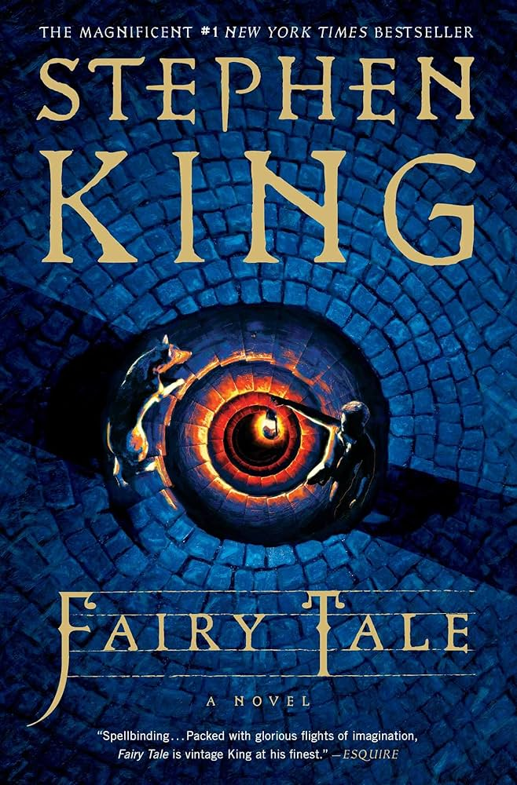

Contes de fées
- Auteur: Stephen King
- Catégorie: Fantasy
- Éditeur: Albin Michel
- Date de publication: 2021
- Nombre de pages: 608
- Commentaire: Un récit enchanteur et sombre qui revisite les contes classiques.
- Note: 8.5/10
Synopsis
Charlie Reade ressemble à un lycéen ordinaire, sportif et bon élève. Mais il porte un lourd fardeau : sa mère a été tuée dans un accident avec délit de fuite quand il avait dix ans, et le chagrin a poussé son père à boire. Charlie a appris à en prendre soin. À dix-sept ans, Charlie fait la connaissance d'un chien, Radar, et de son maître vieillissant, Howard Bowditch, un reclus qui vit dans une grande maison au sommet d'une colline, avec une remise fermée à clé dans le jardin, de laquelle des sons étranges sortent parfois...